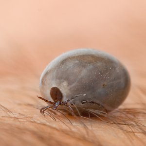
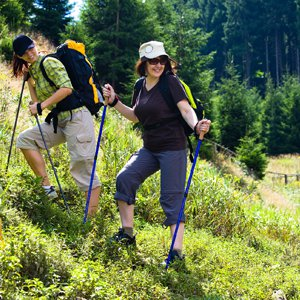

Profilaktyka
Sprawdź jak się chronić przed Kleszczowym Zapaleniem Mózgu i innymi chorobami odkleszczowymi.
Jak się zabezpieczyćO chorobie
WHO, State of the Art of New Vaccines: Research & Development 2003 "KZM jest poważnym przypadkiem ostrej choroby ośrodkowego układu nerwowego, która może zakończyć się zgonem lub długotrwałymi powikłaniami neurologicznymi u 35-58% pacjentów."
Polski ekspert "Zła wiadomość: Nie można uniknąć KZM, a możliwości terapeutyczne są słabe. Dobra wiadomość dotyczy zapobiegania."
Typowy obraz kliniczny KZM charakteryzuje się dwufazowym przebiegiem z niespecyficznymi objawami grypopodobnymi, po których następuje okres bezobjawowy choroby. Po tym okresie następuje drugie stadium choroby pod postacią co najmniej czterech manifestacji klinicznych o zmiennej ciężkości: zapalenie opon mózgowo-rdzeniowych, zapalenie opon mózgowo-rdzeniowych i mózgu, zapalenie opon mózgowo-rdzeniowych, mózgu i rdzenia kręgowego oraz zapalenie opon mózgowo-rdzeniowych z objawami zapalenia korzeni nerwowych. Pacjenci mogą mieć tylko jedną z opisywanych powyżej faz choroby. Czas trwania hospitalizacji waha się od kilku dni do kilku miesięcy. Do 46% pacjentów opuszcza szpital z trwałymi następstwami wymagającymi wieloletniego leczenia oraz rehabilitacji.
Rozpoznanie:
- 
- Nassana Samica kleszcza
{kind=link}
W związku z tym, iż objawy kliniczne KZM nie są specyficzne, chorobę można w odpowiedni sposób rozpoznać jedynie za pomocą technik laboratoryjnych. W pierwszej fazie choroby wirus może zostać wyizolowany z krwi (metoda PCR). Właściwe rozpoznanie zazwyczaj zależy od wykrycia specyficznych przeciwciał klasy IgM i IgG w surowicy krwi metodą ELISA.
Definicja przypadku:
Potwierdzony przypadek KZM jest określany jako chory z gorączką oraz klinicznymi objawami przedmiotowymi lub podmiotowymi zapalenia opon mózgowo-rdzeniowych lub zapalenia opon mózgowo-rdzeniowych i mózgu, łagodnym do umiarkowanego podwyższeniem liczby komórek w PMR (płyn mózgowo-rdzeniowy) oraz obecnością przeciwciał przeciwko wirusowi KZM klasy IgM i IgG w surowicy krwi.
Leczenie:
Nie ma znanego przyczynowego leczenia KZM. W przeciwieństwie do choroby z Lyme (borelioza), innego schorzenia przenoszonego przez kleszcze o podobnym znaczeniu epidemiologicznym w Europie Środkowej leczonego za pomocą antybiotyków, przeciwko KZM nie istnieje żadna skuteczna metoda leczenia.
Zapobieganie:
KZM można w łatwy sposób zapobiegać poprzez stosowanie szczepionki. Doświadczenie austriackie daje jasny dowód na to, iż zaszczepienie dużej części populacji w skuteczny sposób redukuje zachorowalność na KZM. W wielu krajach obserwuje się dwa szczyty sezonowej aktywności kleszczy, tj. wiosną i jesienią. Częstość występowania przypadków klinicznych KZM jest opóźniona o 4 tygodnie w stosunku do okresu sezonowej aktywności kleszczy.
Obecnie większość osób (90%), które ostatecznie rozwiną objawy choroby przybywa na tereny endemicznego występowania KZM w celach rekreacyjnych.
Zakażenie wirusem KZM może również nastąpić w domu, kiedy zakażone kleszcze są przypadkowo wprowadzane w bukietach dzikich kwiatów, choinkach,28) na ubraniach czy przez psy. Ponadto coraz częściej zgłaszane są zakażenia wirusem KZM, które miały miejsce w ogrodach znajdujących się na terenie miasta.
- 
-
Trekking
"Miejsca zakażenia zazwyczaj znajdują się
na nasłonecznionych zboczach (...)"
{kind=link}
Ogniska KZM występują normalnie w biotopach, w których kleszcze oraz jego żywiciele znajdują optymalne warunki do życia. Zakażone kleszcze są często znajdywane na obrzeżach lasów oraz przylegających użytkach zielonych, polanach, nadrzecznych łąkach i bagnach, plantacjach lasów zawierających chrust i krzewy, na przejściu pomiędzy lasem liściastym i iglastym oraz pomiędzy miejscem wycinki a lasem odroślowym. Lasy złożone z dębów i grabów, jak również lasy bukowe i jodłowe z bogatym podszyciem składającym się z chwastów, paproci, bzu czarnego, leszczyny oraz krzewów jeżyny stanowi idealne siedlisko do bytowania kleszczy. Miejsca zakażenia zazwyczaj znajdują się na nasłonecznionych zboczach skierowanych na południe oraz posiadających niską pokrywę złożoną z krzewów i żywopłotów.
Opisywane miejsca należące do wiejskiego krajobrazu, zwłaszcza jeśli znajdują się tam ławki, ścieżki czy miejsca do rozstawienia grilla, przyciągają wielu ludzi, tak więc spodziewane jest wysokie ryzyko zakażenia.
W różnych badaniach pokazano, iż naturalne ogniska występowania KZM nie są z reguły usuwane przez zabiegi kultywacyjne prowadzone w danym rejonie. Ekspozycja na kleszcze jest również możliwa w nowo założonych ogrodach. Kleszcze mogą również zostać przeniesione do domów przez psy, kwiaty, gałęzie lub na ubraniu. Ograniczenie siedlisk małych ssaków do kliku miejsc nie nadających się do uprawy również prowadzi do zwiększenia krążenia wirusa KZM, ponieważ możliwość przeniesienia wirusa wzrasta wraz ze zwiększeniem liczebności populacji żywicieli.